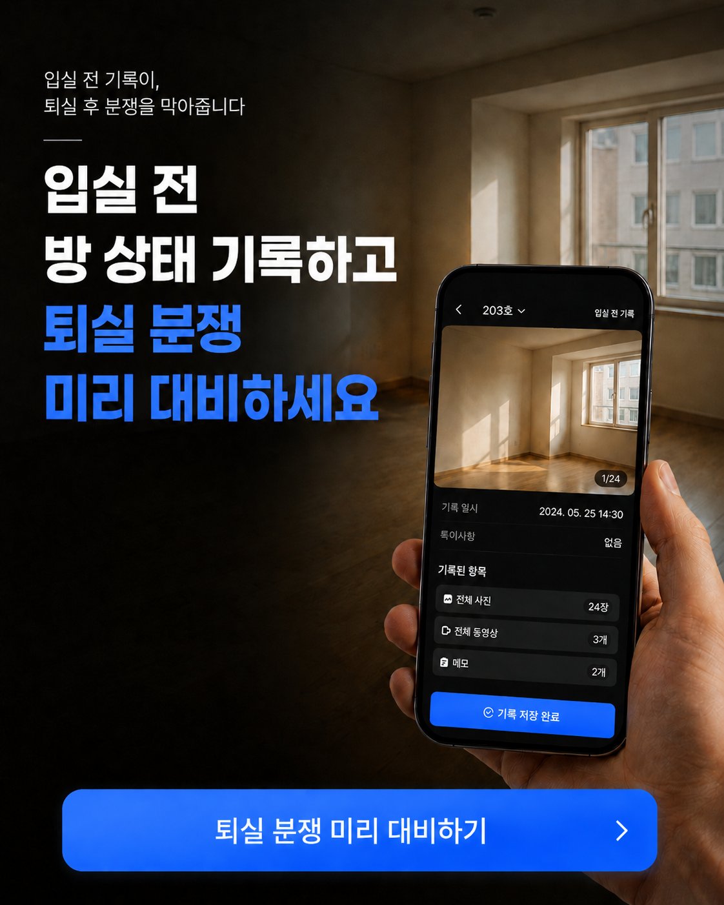

전체 공간 촬영
현관, 방, 창문, 욕실, 주방처럼 퇴실 때 확인할 공간을 빠짐없이 남깁니다.

입실 전 기록
입실 전 방 상태를 사진, 영상, 메모로 남기고 보증금 정산과 원상복구 확인 때 바로 꺼내볼 수 있게 정리합니다.
분쟁은 퇴실 때, 근거는 입실 때
벽지 오염, 바닥 찍힘, 창문 파손처럼 작은 상태 차이는 몇 달 뒤 누구 책임인지 판단하기 어렵습니다. 입실 전 기록이 있으면 퇴실 확인과 보증금 정산을 감정이 아니라 근거로 진행할 수 있습니다.
기록 흐름
사진만 따로 찍어두면 나중에 어느 호실, 어느 시점의 기록인지 다시 찾아야 합니다. 랜디는 기록 대상을 호실 기준으로 묶어둡니다.
현관, 방, 창문, 욕실, 주방처럼 퇴실 때 확인할 공간을 빠짐없이 남깁니다.
사진만으로 애매한 오염, 찍힘, 파손 위치는 메모로 함께 기록합니다.
퇴실 점검 때 입실 전 기록을 다시 열어 원상복구 범위를 확인합니다.
광고 시안 기반 비주얼
입실 전 사진과 영상, 메모가 한곳에 있으면 퇴실 후 “원래 있던 하자였는지”를 두고 길게 설명하지 않아도 됩니다. 기록 중심의 흐름은 임차인과 임대인 모두에게 더 명확한 정산 기준을 만듭니다.
퇴실 분쟁 검색 의도
퇴실 정산, 원상복구, 보증금 반환처럼 실제 분쟁으로 이어지기 쉬운 업무를 입실 전 기록으로 대비합니다.
퇴실 후 하자 책임을 두고 의견이 갈릴 때.
계약 시작 전 방 상태를 남겨두고 싶을 때.
어디까지 복구해야 하는지 기준이 필요할 때.
정산 내역을 설명할 자료가 필요할 때.